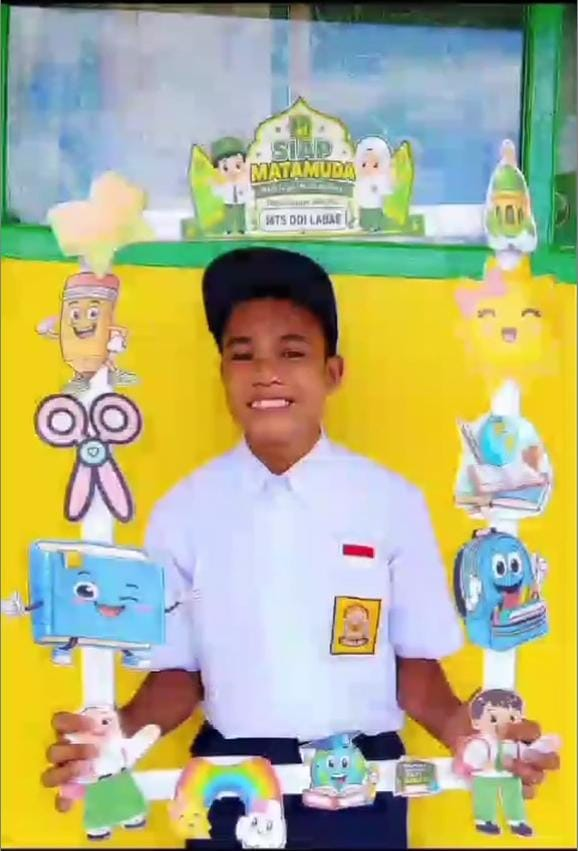
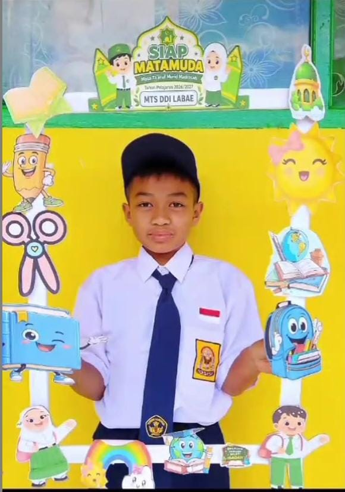
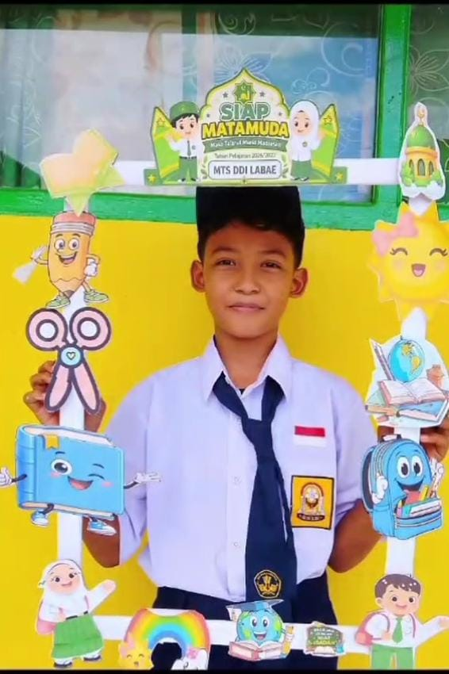
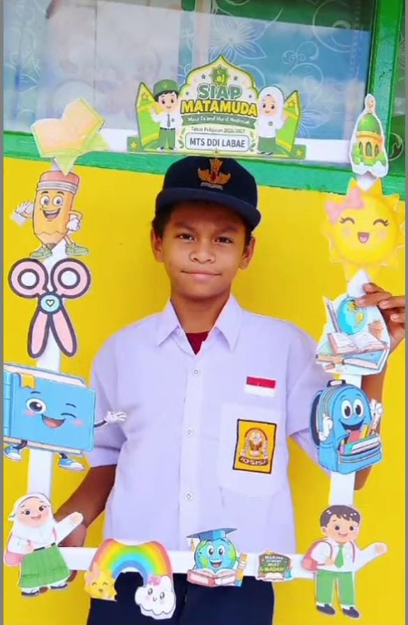

Penutupan MATAMUDA 2026 di MTsS DDI Labae, Pembentukan Akhlak Jadi Pesan Utama Kepala Madrasah

Labae — MTsS DDI Labae resmi menutup kegiatan MATAMUDA 2026 dengan penuh semangat dan kebersamaan. Kegiatan ini menjadi salah satu momen penting dalam proses pengenalan lingkungan madrasah sekaligus pembentukan karakter peserta didik agar mampu beradaptasi dengan kehidupan madrasah yang menjunjung tinggi nilai-nilai keislaman dan akhlak mulia.
Dalam momentum penutupan tersebut, Kepala MTsS DDI Labae menekankan pentingnya menjaga akhlak dalam setiap aspek kehidupan, baik di lingkungan madrasah, keluarga, maupun masyarakat. Peserta didik diharapkan tidak hanya memiliki pengetahuan dan keterampilan, tetapi juga menunjukkan perilaku yang santun, disiplin, bertanggung jawab, serta menghormati guru dan sesama teman.
Pesan tersebut menjadi pengingat bahwa keberhasilan pendidikan tidak semata-mata diukur dari prestasi akademik, tetapi juga dari karakter dan perilaku sehari-hari. Akhlak yang baik merupakan fondasi penting dalam membentuk generasi yang berilmu, beriman, dan mampu memberikan manfaat bagi lingkungan sekitarnya.
Galeri Dokumentasi Peserta MATAMUDA 2026
Potret antusiasme santri peserta didik baru menyambut perjalanan belajar di MTsS DDI Labae.




Selama pelaksanaan MATAMUDA 2026, peserta didik diharapkan memperoleh pengalaman dan pembelajaran yang membantu mereka mengenal budaya madrasah, memahami tata tertib, menumbuhkan rasa kebersamaan, serta membangun semangat belajar yang positif. Kegiatan ini juga menjadi sarana untuk menanamkan nilai kedisiplinan, kemandirian, kerja sama, dan tanggung jawab.
Penutupan MATAMUDA 2026 bukanlah akhir dari proses pembelajaran, melainkan langkah awal bagi peserta didik untuk menjalani kehidupan madrasah dengan semangat baru. Nilai-nilai yang diperoleh selama kegiatan diharapkan dapat diterapkan secara konsisten dalam kegiatan belajar dan pergaulan sehari-hari.
MTsS DDI Labae terus berkomitmen menghadirkan pendidikan yang seimbang antara pengembangan ilmu pengetahuan, penguatan keimanan, dan pembentukan karakter. Melalui kegiatan MATAMUDA, madrasah berharap dapat mencetak generasi muda yang berakhlak mulia, berprestasi, serta mampu menjaga nama baik madrasah.
Dengan berakhirnya kegiatan MATAMUDA 2026, keluarga besar MTsS DDI Labae berharap seluruh peserta didik semakin termotivasi untuk belajar, menaati tata tertib, menghormati guru, dan menjadikan akhlak mulia sebagai bagian penting dalam kehidupan sehari-hari.
“MTsS DDI Labae — Berilmu, Berakhlak, dan Berprestasi.”